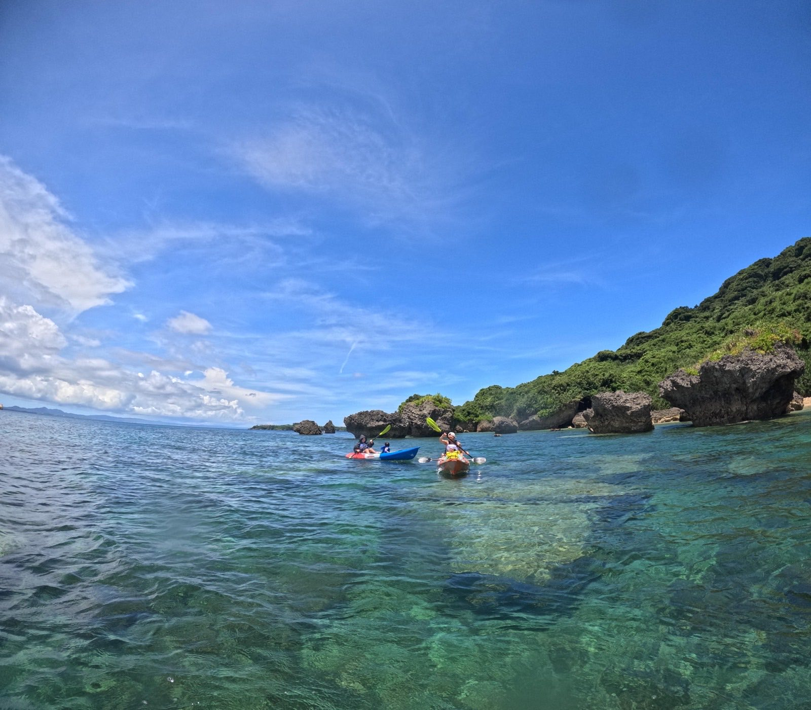
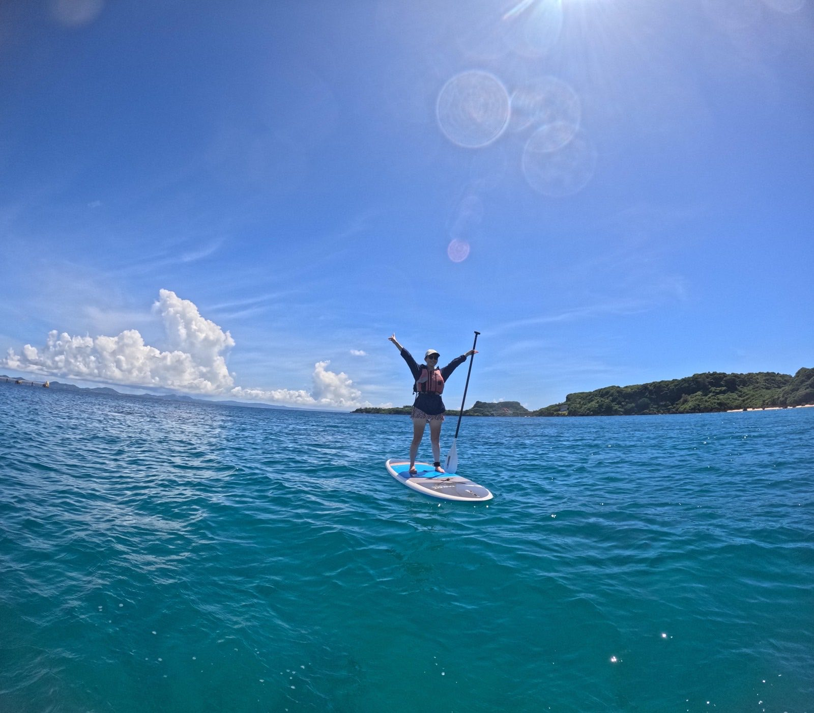
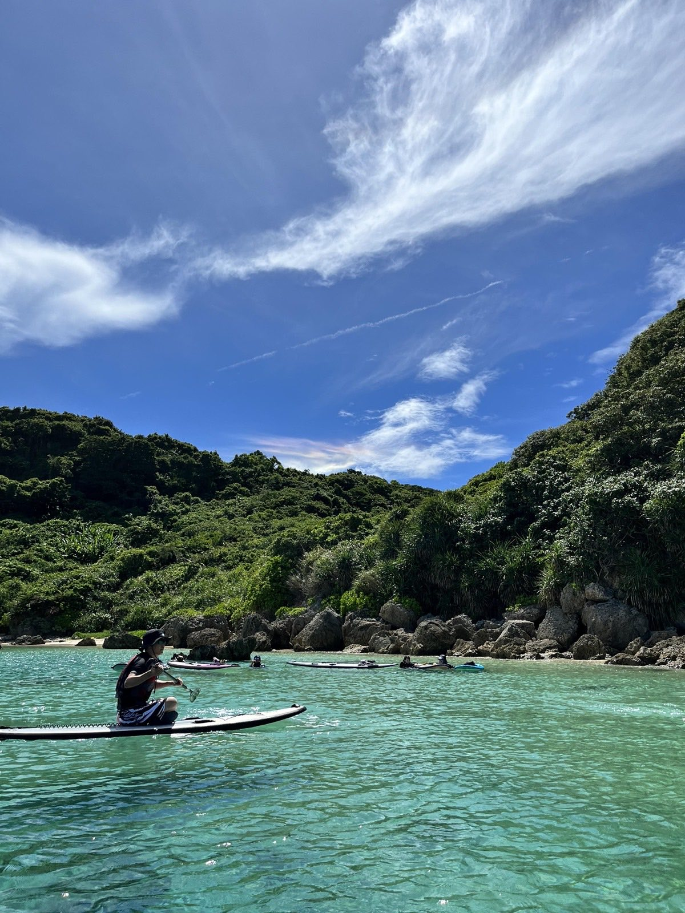
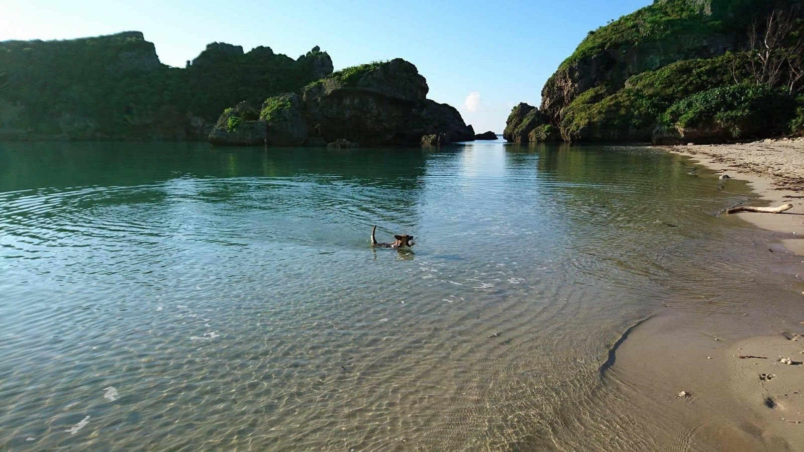
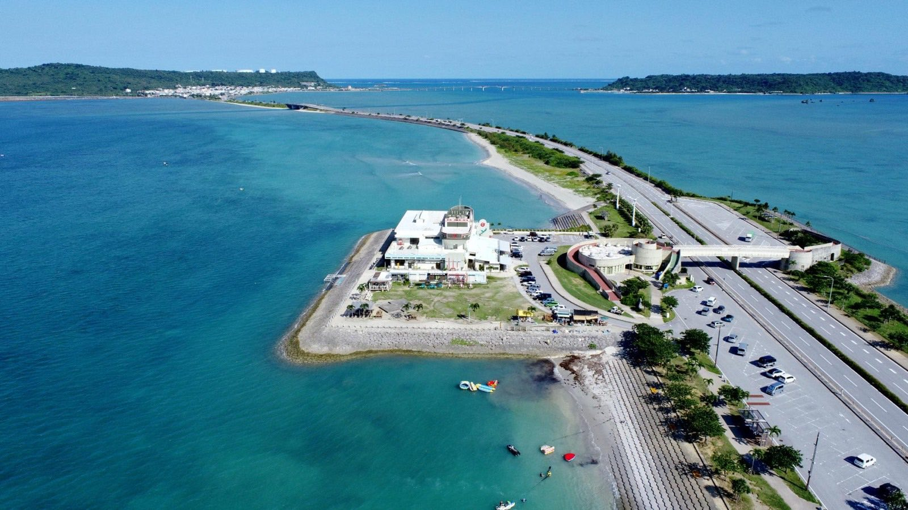

アクティビティ
浜比嘉島をはじめ、島嶼地域の大自然を満喫できるアクティビティがあります。人の立ち入らない島の原風景が残る場所を見ながら海を進んだり、シークレットビーチで海水浴を満喫したりできます。
自然の美しさや強さ、偉大さを感じながら、自然の大切さを実感できるツアーを案内しています。



SUP・シーカヤック体験
ー 信頼・安心できるガイドがご案内します ー
自然の中で冒険しよう。小さなお子様や、初心者から上級者まで、様々なコースを用意しています。ちょっと試してみたい、といった気軽な気持ちからでも体験ができます。
島とその周りの海を熟知したガイドが、最適な環境でのコースをご案内しています。

サイクリング
ー 自分のペースで景色を楽しめる ー
車で通ると見過ごしてしまう景色があります。レンタサイクルは、のんびりと島散策するのにおすすめです。浜比嘉島内であれば、アップダウンもほぼなく、30分もあれば1周できる距離です。
伊計島を目指す方は、途中、急な登り坂があるので、電動自転車をおすすめします。海中道路を往復するのも、いい運動になります。途中、海の駅があるので休憩も可能です。
※レンタサイクルは宿からも予約可能です。その場合は、ご利用の前々日までにご予約をお願いいたします。詳細につきましてはお問い合わせください。
アクティビティのご予約
Booking各アクティビティのご予約は「カモメのジョナサン」のホームページからお願い致します。
ご予約の際に「アイランドリゾート76のHPを見た！」とお伝え頂けると幸いです。
ご予約・お問い合わせ
ご予約・空き状況の確認はAirbnbにて承っております。ご不明な点は、メール（islandresort76@gmail.com）までお気軽にお問い合わせください。
宿の空き状況・ご予約（Airbnb）お問い合わせ：islandresort76@gmail.com